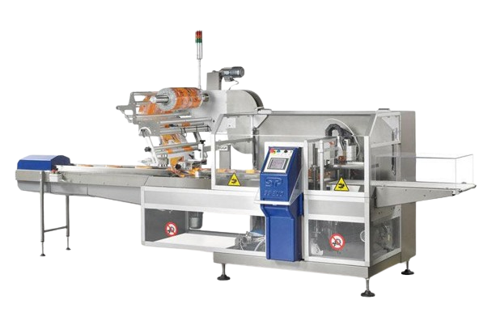
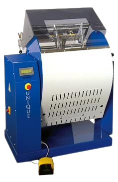
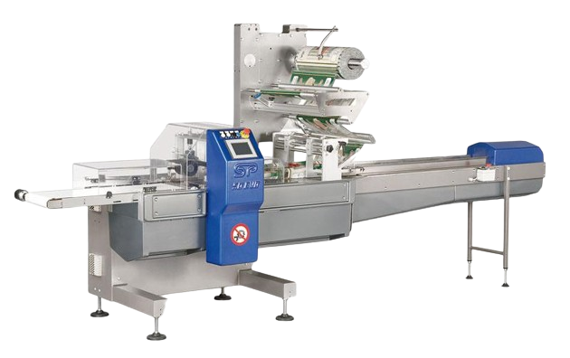

Flow-Pack pakkimisliin
Horisontaalne
GSP 65 EVO
Horisontaalne pakkimismasin, flow pack, koos BOX MOTION liikuvsüsteemis keevitusega, kile orientatsiooniga ülevalt, kile laius kuni 1000 mm. 5 iseseisvat mootorit: harjadeta mootor laadimiskonveierile, harjadeta mootor pikikeevitusvõllidele, harjadeta mootor põikikeevitussüsteemile, asünkroonmootor kilekerimisele, asünkroonmootor väljastustransportöörile.

Kirjeldus:
Sisemine raam värvitud teras, värv RAL 9007.
370 mm tõstetud jalgadel põrandast. Lihtne puhastada.
Katted ja kõik pinnad mis vajavad puhastamist on valmistatud roostevabast terasest AISI 304
2 m pikkune laadimiskonveier varustatud plastikust lükkajatega, mis on lihtsalt vahetatavad.
PICK and PLACE süsteem. Lisana on võimalik varustada laadimikonveieri algus pappaluste robotisseeritud paigaldussüsteemiga pagaritoodete alla.
Ülemine kilerulli hoidja on varustatud automaatse kilerulli lukustussüsteemiga Kileedastus on motoriseeritud.
Pikikeevitusjaam sisaldab kolm paari rattaid Ø 120 mm:
1. paar: kileveorattad. Seadistatavad ja automaatse avamise/sulgemisega.
2. paar: keevitusrattad. Seadistatavad ja automaatse avamise/sulgemisega.
3. paar: kilejahutusrattad. Seadistatavad ja automaatse avamise/sulgemisega.
BOX MOTION pneumaatilne põikikeevitus-lõikus maksimaalse laiusega 400 mm
Värviline eestikeelne puutetundlik juhtpaneel 5.7 tolli piiramatult programmeeritav!
Väljastustransportöör pikkusega 1000 mm
Universaalne pakkimiskael või fikseeritud kael
Pakkimisformaadi kiirvahetussüsteem ca 2 min
Pneumaatika komponendid
Standard varuosad komplektis!
Masina orientatsioon STANDARD: vasakult paremale (tooted laaditakse vasakult ja väljuvad paremalt)
Kaal u 700 kg
Vastab CE nõuetele
Rohkem infot: GSP 65 EVO
ITALDIBIPACK UNIQUE
Unikaalne horisontaalselt, diagonaalselt või vertikaalselt seadistatav "flow pack" pakkimismasin koos liikuva-katkeva liikumisega ja kileorientatsiooniga ülevalt, kile laius kuni 700 mm. Gaasiga pakkimise võimalus (MAP). Kiirus ligikaudu 15-20 pakendit minutis, sõltuvalt pakendi pikkusest. Toodete laadimine toimub käsitsi (vajadusel automatiseerimise võimalus).

Kirjeldus:
Elektromehaaniline (suruõhuvaba) versioon koos võllide elektroonilise kontrolleriga.
Sisemine raam on värvitud teras, värv RAL 9007.
Kõik katted ja puhastatavad pinnad on roostevaba terasest AISI 304.
Pikikeevitusjaam sisaldab kolm paari rattaid Ø 120 mm (lisavarustus):
1. paar: kileveorattad. Seadistatavad ja automaatse avamise/sulgemisega.
2. paar: keevitusrattad. Seadistatavad ja automaatse avamise/sulgemisega.
3. paar: kilejahutusrattad. Seadistatavad ja automaatse avamise/sulgemisega.
Põikikeevitus-lõikusjaam: 300 mm laiune, elektrooniliselt seadistaval keevituskõrgusel sulguv keevituspea.
Värviline puutetundlik juhtpaneel
Väljastustransportööri võimalus
Universaalne pakkimiskael
Pakkimisformaadi kiirvahetussüsteem ca 2 min
Trükitud kile kasutamise võimalus koos printeriga (lisaseade)
Kaal u 300 kg
Vastab CE nõuetele
Rohkem infot: ITALDIBIPACK UNIQUE
GSP 45 EVO
Horisontaalne pakkimismasin flow pack koos pöörlevate keevituspeadega ja kileorientatsiooniga ülevalt, kile laius kuni 700 mm. 4 iseseisvat mootorit: harjadeta mootor laadimiskonveierile, harjadeta mootor pikikeevitusvõllidele, harjadeta mootor põikikeevitussüsteemile, asünkroonmootor inverteriga väljastustransportöörile. Kiirus 40-60 pakendit minutis, sõltuvalt pakendi pikkusest. Toodete laadimine konveierile toimub käsitsi (vajadusel aluspapp automaatselt).

Kirjeldus:
Täielik servo versioon koos võllide elektroonilise kontrolleriga.
Sisemine raam on värvitud teras, värv RAL 9007.
Kõik katted ja puhastatavad pinnad on roostevabast terasest AISI 304.
2 m pikkune laadimiskonveier varustatud plastikust lükkajatega, mis on lihtsalt vahetatavad.
PICK and PLACE süsteem. Lisana on võimalik varustada laadimikonveieri algus pappaluste robotiseeritud paigaldussüsteemiga pagaritoodete alla.
Ülemine kilerulli hoidja on varustatud automaatse kilerulli lukustussüsteemiga. Kileedastus on motoriseeritud.
Pikikeevitusjaam sisaldab kolm paari rattaid Ø 120 mm (lisavarustus):
1. paar: kileveorattad. Seadistatavad ja automaatse avamise/sulgemisega.
2. paar: keevitusrattad. Seadistatavad ja automaatse avamise/sulgemisega.
3. paar: kilejahutusrattad. Seadistatavad ja automaatse avamise/sulgemisega.
Põikikeevitus-lõikusjaam: pöörlev keevituspea liikumise elektroonilise kontrolliga ja keevituslaiusega 350mm. Keevituskõrgus on muudetav välisest juhtrattast.
Värviline eestikeelne puutetundlik juhtpaneel 5.7 tolli piiramatult programmeeritav!
Väljastustransportöör pikkusega 900 mm.
Universaalne pakkimiskael ja/või fikseeritud kael.
Pakkimisformaadi kiirvahetussüsteem ca 2 min.
Pneumaatika komponendid
Standard varuosad komplektis!
Masina orientatsioon STANDARD: vasakult paremale (tooted laaditakse vasakult ja väljuvad paremalt)
Kaal u 600 kg
Vastab CE nõuetele
Rohkem infot: GSP 45 EVO